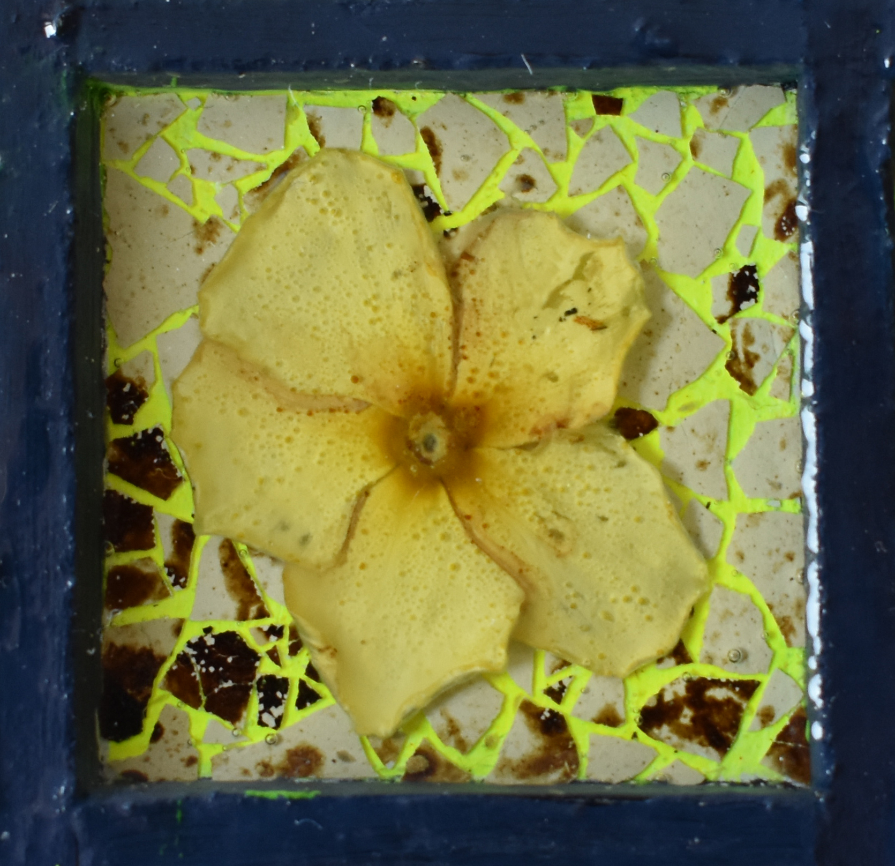

Leonardo Furlan () is an italian artist born in 1998; he studied painting and
graduated at Venice Academy of Fine Arts in 2024.
In his paintings, that he makes like iconic apparition, he brings
together multiple interests he’s into, in multiple ways. The paradox
of inconcistency and power of originality and banality is for sure a
central theme: Who and when someone can tell if a work is more
original than other ones? Why and how is it important? Leonardo
reflects about individual and common life experiences, on the way
they, inseparable, create a shared but at the same time personal
imaginary.
Born on March 4th 1998.
EDUCATION
EDUCATION